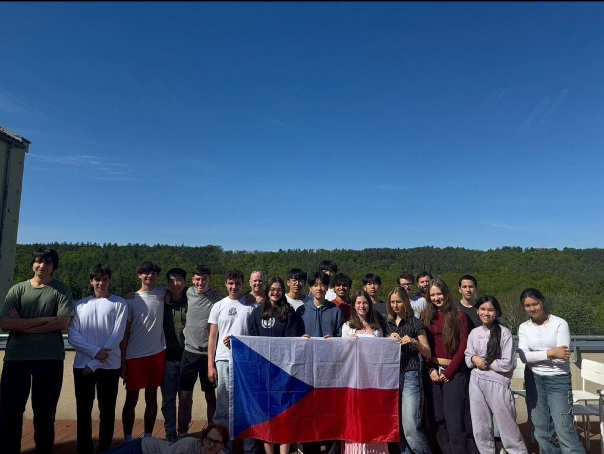
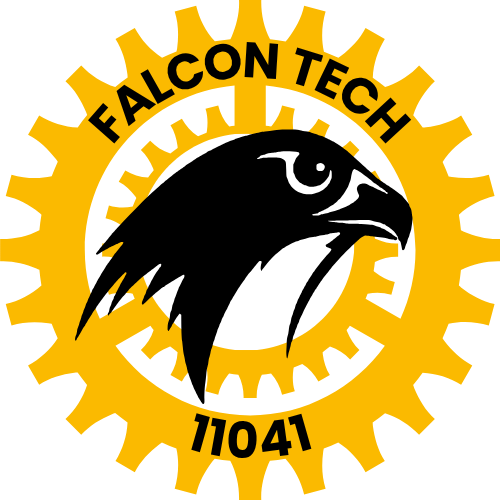
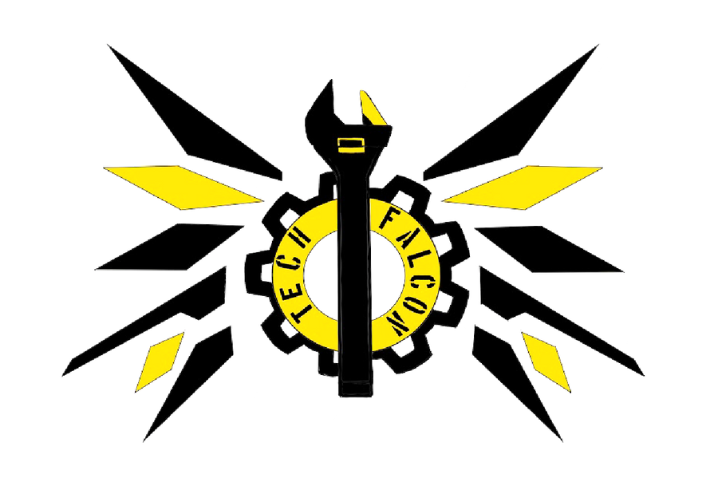
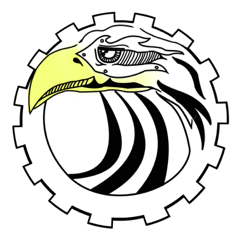

Who we are
We are the Upper School Robotics club of the International School of Prague: more than 20 members of all ages and nationalities, building robots since 2012.
Built by students
The club began in 2012, when an ISP student took the initiative to start it. Robotics has since grown in popularity at our school and spread from the Upper School to the Middle and Elementary Schools.
In 2016 FalconTech won the Inspire Award, one of only two of the seven awards that qualified a team for the FIRST Tech Challenge World Championship. That made ISP the only school representing the Czech Republic at Worlds in St. Louis, and it was the first time our school had been invited.
We are a student-led team. Experienced upperclassmen lead, younger members learn by doing, and everyone builds, codes, drives, documents and does outreach together. Girls are an integral part of the club, which proves that robotics is not only a boys' world.
Outside competitions we share STEM with our community: we've written children's books about science and technology, run robotics sessions with Lower School students, demonstrated our robots at Maker Faire Prague and the Library Expo, and spoken about our journey at TEDx.

Our values
We take things apart to see how they work, and we keep going until they work the way we want them to.
Gracious Professionalism and Coopertition. In St. Louis a rival team lent us a part when our design was ruled illegal, and we try to pay that forward.
Engineering notebooks, CAD, testing, re-testing, and lots of Saturdays in the Loft.
Team logos through the years
Every ISP team has designed its own identity.



Our story
Highlights from more than a decade of robotics at ISP.
- 2012
The club starts
An ISP student took the initiative to start an Upper School robotics club, and other students soon joined. It was created to promote engineering, new technology and programming at our school.
- 2013FLL
FalconTech Middle School
ISP launches FalconTech Robotics for Middle School students, built around the brand-new LEGO Mindstorms EV3. The team (#1372) entered the FIRST LEGO League "Nature's Fury" regional qualifier in Prague in November 2013. Seed funding came from the Noen Fund.
- 2014
Robot Fun Day
Saturday tournaments, sumo-bot battles and line-following challenges with Upper School robots on show. Twice as many students signed up as one session could hold, so the club ran an extra season.
- Feb 2015FTC
ISP hosts CEESA FTC
The CEESA Eastern European FIRST Tech Challenge (hosted by AISB in Bucharest from 2011 to 2014) moves to the International School of Prague, with 13 teams from across the region.
- Feb 2016FTC
Inspire Award
At the second CEESA/FTC tournament in Prague, FalconTech finished 5th in qualifying, reached the semifinals with WattsUp from the Netherlands, and won the Inspire Award, which earned a place at the World Championship.
- Apr 2016FTC
World Championship, St. Louis
Eleven ISP students flew to St. Louis. Our best match scored 312 points, and the robot climbed the mountain and knocked down two climbers. The trip was funded by Avast and the ISP Student Council.
- 2016–17FTC
Three teams
Three teams: FalconTech, the club's oldest team and the one that went to St. Louis; Divine Falcons; and Mecha Falcons, the least experienced but most ambitious, made up entirely of 9th and 10th graders.
- Oct 2016
A new logo
FalconTech designed its own "Tech Falcon" logo (wings, a gear and a wrench) for the team T-shirts, and Mecha Falcons got a falcon-in-a-gear logo of its own.
- 2017–18FTC
Five robots
The club grew to five teams: FalconTech, Team Supreme, Mecha Falcons, Concords and Hatch Tech, and moved to REV electronics for the Relic Recovery season. We met every Tuesday and Friday after school. ISP hosted the CEESA FTC tournament each February.
- Aug 2018FGC
Team Czech Republic
ISP represents the Czech Republic at the FIRST Global Challenge in Mexico City for the first time. Czechia has been represented by ISP students every year since.
- 2019FGC
Dubai
Team Czech Republic competes at FGC 2019 in Dubai.
- 2023FGC
Singapore
Team Czechia competes at FGC 2023 in Singapore.
- 2024FGC · FTC
Athens & Italy
14 ISP students represent Czechia at FGC 2024 in Athens ("Feeding the Future"). Earlier that year, Mecha Falcons won 1st place in the Hardware Challenge at FIRST Slovakia in Košice, and LionTech took the Teamwork Award.
- 2025FGC · FTC · VEX
Panama & Hasselt
2nd place at FIRST Global Slovakia in Bratislava, then 27th in the world at FGC 2025 in Panama City. In November we won the Sustain Award at the FTC Benelux qualifier in Hasselt, Belgium.
- 2026FGC · VEX
Incheon
VEX "Push Back" at CEESA in Tirana, FIRST Global Slovakia in Bratislava, Maker Faire Prague, and next: FGC 2026 in Incheon, South Korea.